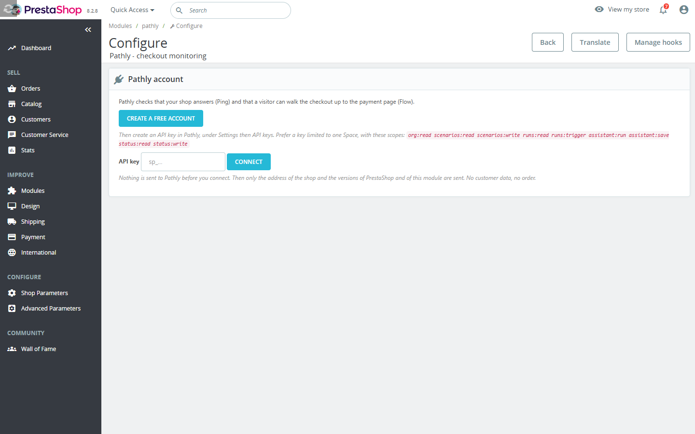
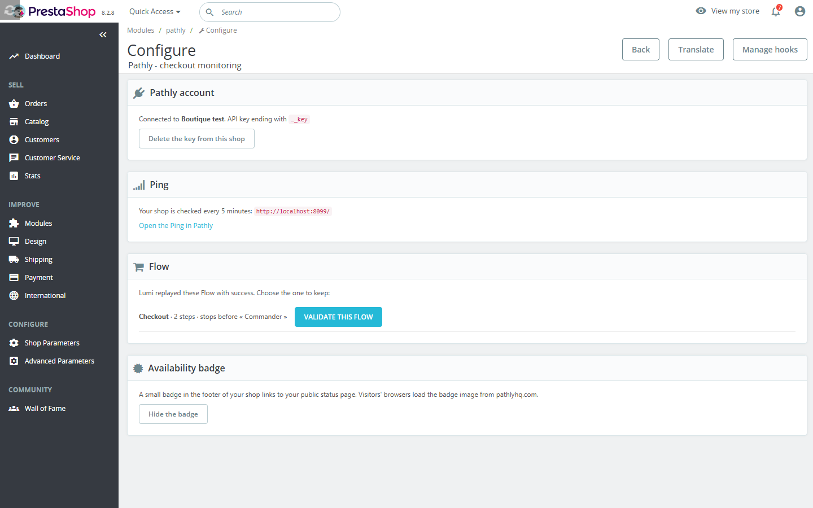
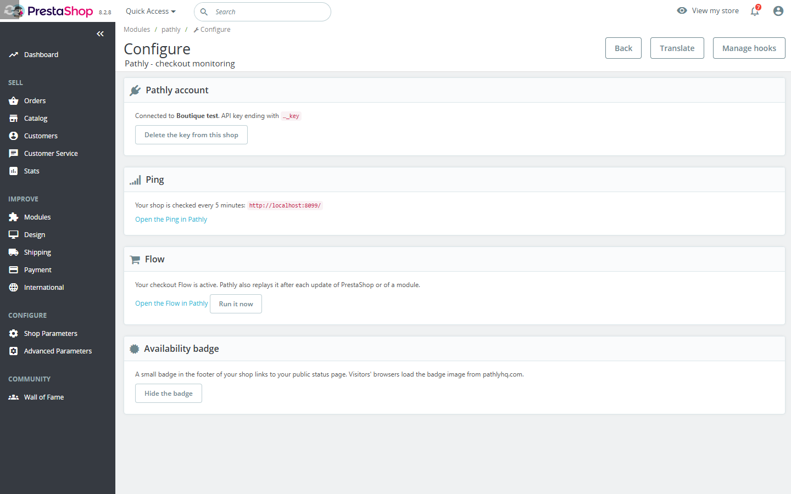
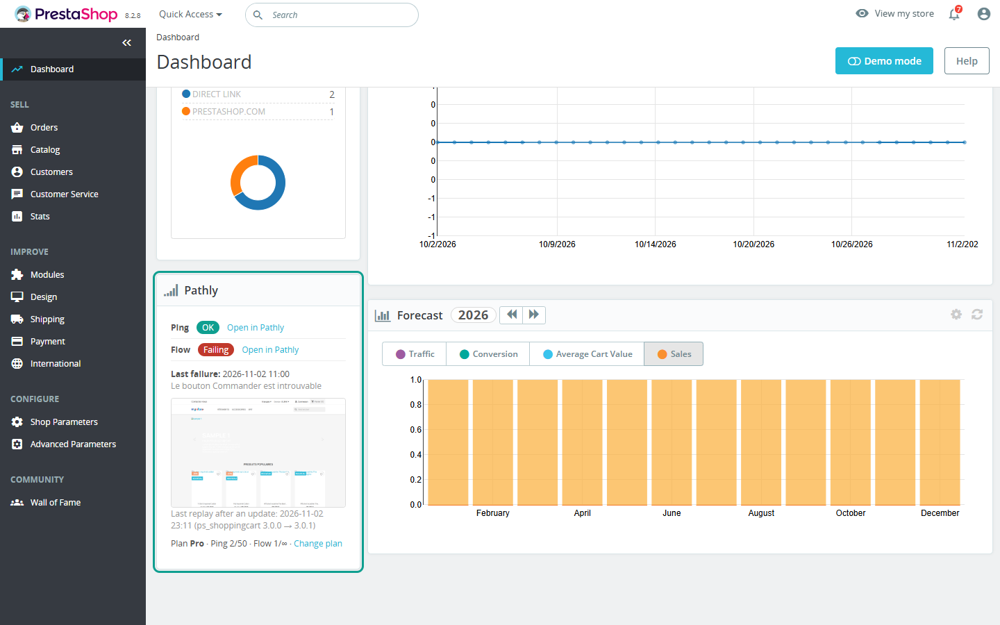

User and installation guide of the PrestaShop module. For PrestaShop 1.7.7 to 9.
Pathly watches the path. Ping if it's up. Flow if a user can walk it. Chain if the services behind it hold.
The module is free. It connects to a Pathly account: the Solo plan is free, without a credit card. Paid Pathly plans are a separate subscription (prices on pathlyhq.com).
| PrestaShop | 1.7.7 to 9 |
|---|---|
| PHP | 7.2 or later, as supported by your PrestaShop version. Extensions curl and json. |
| Outgoing HTTPS | The shop must reach https://api.pathlyhq.com. No other address is called. |
| Public shop | Pathly visits the shop from the internet: a shop in maintenance mode, behind a password or on a local address cannot be watched. |
| Pathly account | Free Solo plan, without a credit card. |
pathly.zip.Only an employee with the SuperAdmin profile sees the settings page and the widget.
org:read scenarios:read scenarios:write runs:read runs:trigger assistant:run assistant:save status:read status:write.

Lumi never pays, never sends a form and only types test values. Each run of the Flow creates a test cart on the shop: it can trigger your abandoned-cart reminders and appear in your cart statistics. Exclude the test address and name from these tools.
PrestaShop 9 signals module updates with the actionModuleUpgradeAfter hook, PrestaShop 8 with actionBeforeUpgradeModule. On every version, the module also compares the installed versions of PrestaShop and of the modules, at most every 5 minutes, when an administrator opens the back office. Two replays are at least 10 minutes apart. The button Run it now starts a replay by hand.

On the back office dashboard: status of the Ping and of the Flow, date and screenshot of the last failure, last replay, plan and quotas, and links to Pathly.

Off by default. Click Show the badge: Pathly publishes a status page, and a small badge in the shop footer links to it. The browsers of your visitors then load the badge image from pathlyhq.com: mention it in your privacy policy. Click Hide the badge to remove it and unpublish the page.
Uninstalling deletes every setting of the module from the shop. Your Ping and Flow stay in your Pathly account, where you can delete them.
| Pathly refused this API key | Check that the key is active, not revoked, and has the scopes listed above. |
|---|---|
| Pathly cannot reach your shop | The shop must be online, out of maintenance mode, on a public address. |
| Pathly cannot be reached from your server | The server must allow outgoing HTTPS to api.pathlyhq.com. |
| Lumi does not find the checkout | Record the Flow yourself in Pathly, without code. |